Français avec Vlada
Перестань відкладати французьку: 5 модулів з нуля за 19 €
Bonjour Club веде від перших звуків до бази A1 і допомагає заговорити вже з першого модуля. Фрази для життя у Франції, граматика без зайвої теорії, аудіо для вимови.
Перший модуль безкоштовно. Доступ без терміну.

Чесно: що з цього про тебе?
Натисни на все, що про тебе
0 з 6 про тебе
Натисни хоча б на один пункт, щоб побачити результат.
Знайоме відчуття. Перший модуль якраз про це: кілька сторінок, і ти вже вітаєшся та представляєшся французькою.
Схоже, французька давно чекає «кращого моменту». Bonjour Club дає маршрут на 5 модулів, щоб почати сьогодні, а не з понеділка.
Тобі точно сюди. Bonjour Club закриває саме це: зрозумілий план, вимова з аудіо, перші розмови і видно, що вже вмієш.
Що змінюється, коли є маршрут
Зараз
Французька «на потім»
- Відкладаєш до «кращого моменту», а переїзд наближається.
- Збираєш уроки з різних застосунків і відео.
- Знаєш слова, але мовчиш, коли треба щось сказати.
- Не розумієш, чи є прогрес.
З Bonjour Club
Французька з першого модуля
- 5 модулів по черзі: від «Bonjour» до кафе і супермаркету.
- Кожен модуль закінчується місією: складаєш свій діалог і говориш.
- Аудіо до вимови: слухаєш і повторюєш уголос.
- Відповіді до вправ і планувальник, щоб бачити, що вже вмієш.
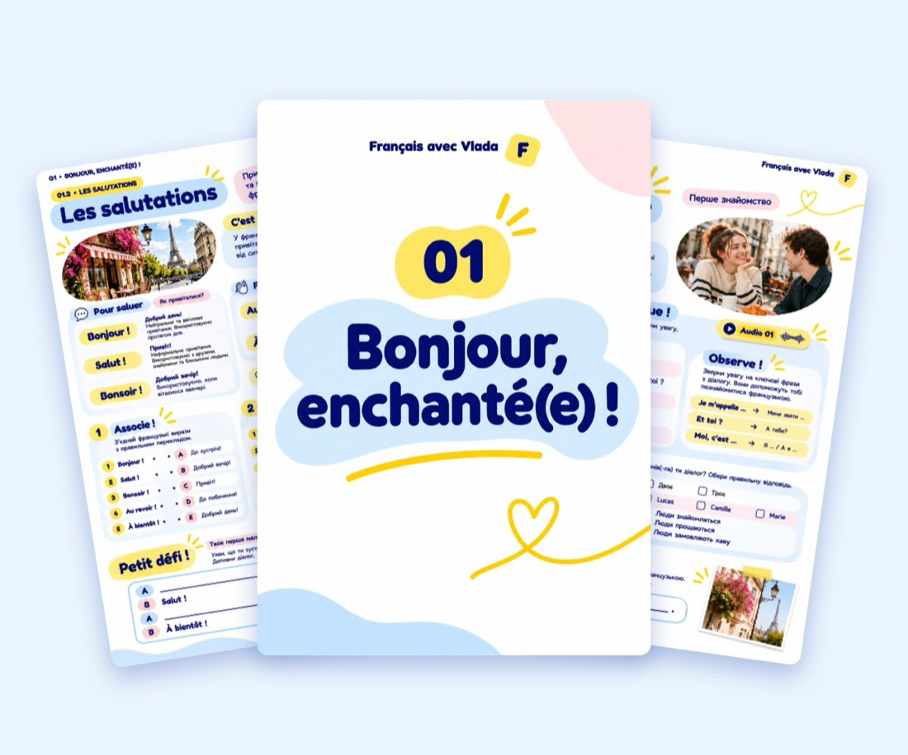
Перший модуль безкоштовно
Спробуй перший модуль, перш ніж платити
Модуль «Bonjour, enchanté(e)» повністю: після нього ти вітаєшся, знайомишся і представляєшся французькою.
- Діалоги з аудіо: чуєш, як звучить жива французька
- Фрази для знайомства: Bonjour, Je m'appelle, Enchanté(e)
- Вимова і інтонація: слухаєш і повторюєш
- Фінальна місія: твій перший діалог французькою
Без оплати: просто напиши Владі в Telegram
5 модулів: що ти вмієш після кожного
- 1
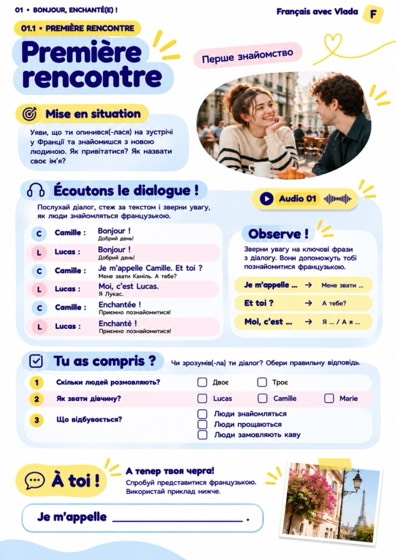
Bonjour, enchanté(e)
Перше знайомство, привітання і твоя перша розмова.
- Вітатися і прощатися
- Представлятися
- Tu чи vous
- 2
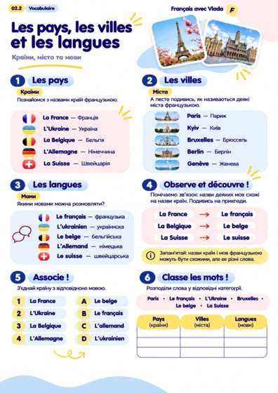
Qui suis-je?
Розповідаєш, хто ти і звідки.
- Звідки ти
- Якими мовами говориш
- Розповідь про себе
- 3
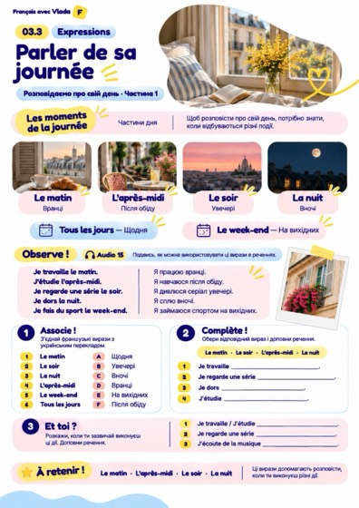
Ma vie quotidienne
Твій звичайний день французькою.
- Твій день
- Котра година
- Дієслова на -ER
- 4
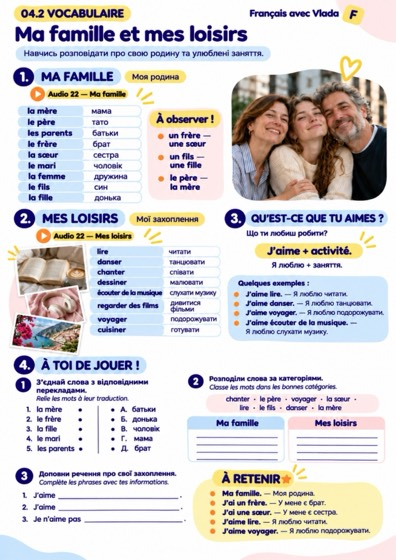
C'est moi
Твій портрет: сім'я, робота, захоплення.
- Сім'я і захоплення
- Що любиш і що ні
- Числа до 1000
- 5
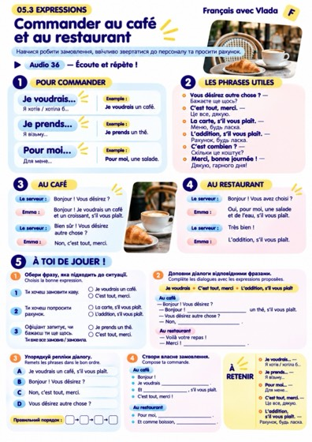
Au quotidien
Місто, кафе, магазини: французька для побуту.
- Кафе і ресторан
- Супермаркет і ціни
- День у місті
Що ти отримуєш у кожному модулі
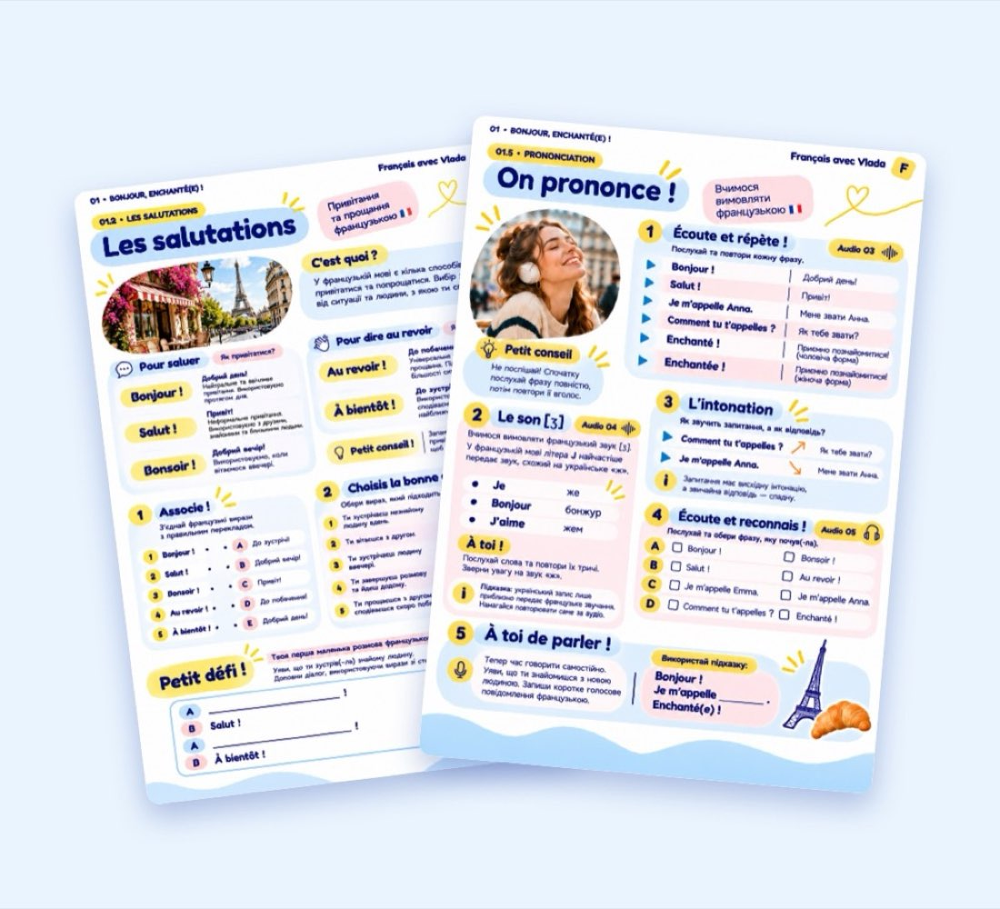
Розумієш, де це знадобиться
Кожна тема починається з живої ситуації і діалогу.
Вчиш лише потрібні слова
Слова саме для цієї ситуації, без довгих списків.
Маєш готові фрази
Їх можна сказати вже сьогодні.
Розумієш граматику без зубріння
Коротко і на прикладах, без зайвої теорії.
Перестаєш боятися вимови
Слухаєш аудіо і повторюєш уголос.
Закріплюєш, а не забуваєш
Вправи одразу після нової теми.
Говориш сама
У фінальній місії складаєш свій діалог і проговорюєш його.
Спробуй зараз: 4 завдання з першого модуля
Це справжня вправа зі сторінки «Les salutations». Обери вираз, який підходить до ситуації.
1 / 4
Ти зустрічаєш незнайому людину вдень.
2 / 4
Ти вітаєшся з другом.
3 / 4
Ти зустрічаєш людину ввечері.
4 / 4
Ти прощаєшся з другом і сподіваєшся скоро побачитися.
0 / 4
Нічого страшного, це твоя перша вправа. Саме для цього в зошиті є пояснення: після першого модуля ці фрази стануть твоїми.
Непогано для старту. Ти вже відчуваєш різницю між Bonjour і Salut, а далі буде тільки легше.
Ти молодець: 4 з 4 без жодного уроку. У тебе добре відчуття мови, тож перший модуль піде легко.
Так побудована кожна сторінка: ситуація, пояснення, вправа.
Так виглядає зошит зсередини
Гортай сторінки →1 / 6
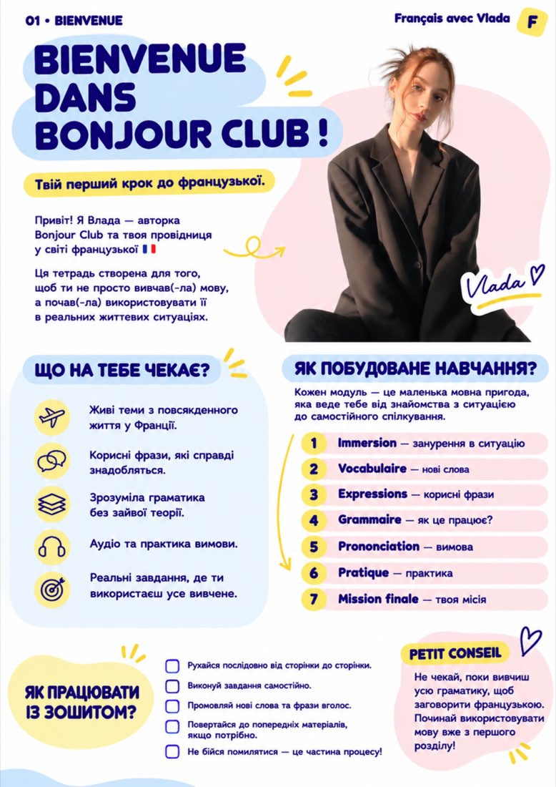

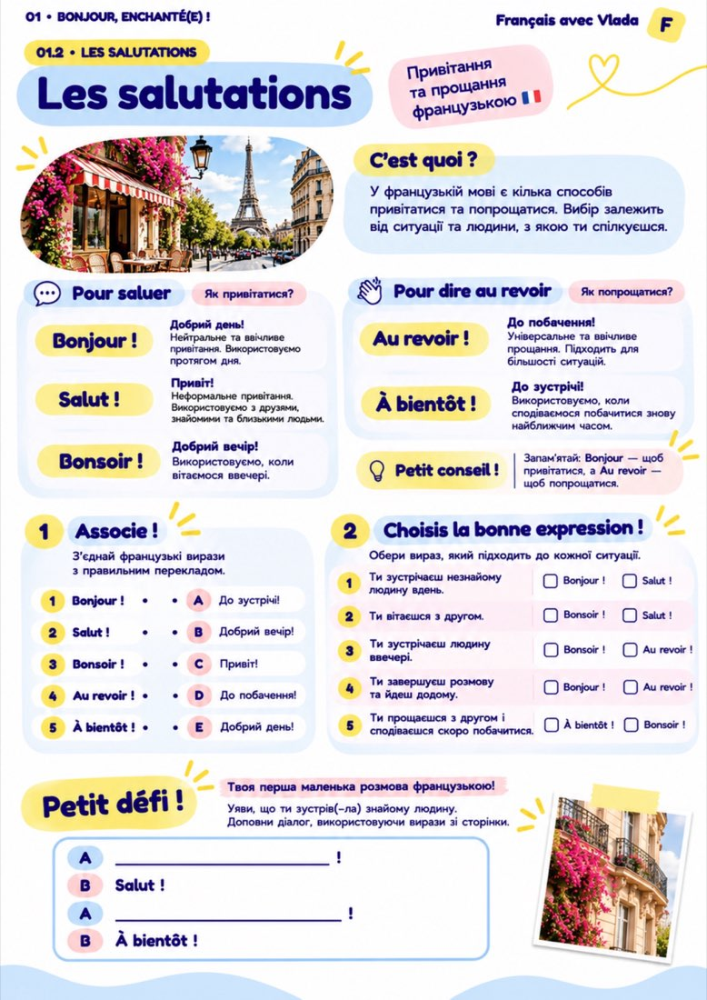

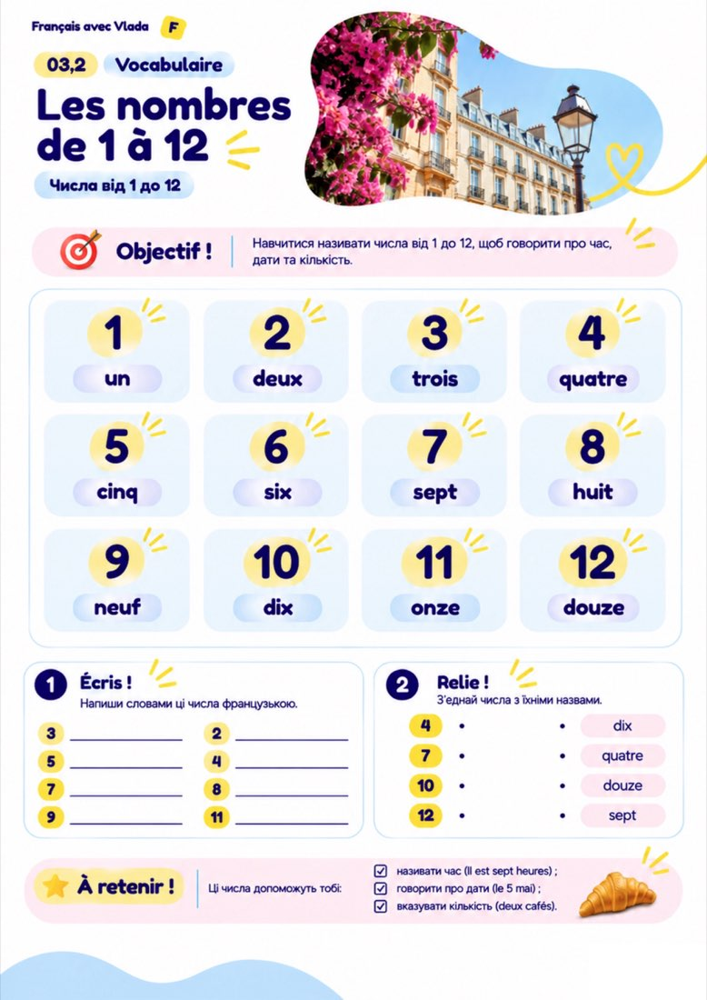

Що входить у Bonjour Club
Bonjour Club
19 €
- Основний зошит: 5 модулів з лексикою, граматикою, вимовою і практикою
- Cartes de vocabulaire: картки, щоб вчити і повторювати слова
- Fiches de grammaire: короткі шпаргалки з граматики
- Bibliothèque audio: аудіо для слуху, вимови та інтонації
- Corrigés: правильні відповіді до вправ
- Mon planning d'apprentissage: планувальник навчання і прогресу
- Доступ без терміну

авторка Bonjour Club, Français avec Vlada
Привіт, я Влада
Я зробила Bonjour Club, щоб ти почала використовувати французьку в реальних ситуаціях, а не лише вчила правила. Не чекай, поки вивчиш усю граматику, щоб заговорити. Починай говорити вже з першого розділу.
Влада
Питання про Bonjour Club
Чи можна спробувати безкоштовно?
Так. Перший модуль безкоштовний: напиши Владі в Telegram і отримаєш його.
Чи підійде, якщо я зовсім не знаю французької?
Так. Зошит розрахований на старт з нуля: починаєш з перших слів, звуків і привітань.
Який рівень буде після зошита?
Міцна база для переходу з нуля до A1. Ти зможеш представитися, розповісти про себе й свій день, замовити в кафе і зробити покупки. Повний рівень A1 зошит не обіцяє.
Чи потрібен викладач?
Ні. Bonjour Club для самостійного навчання: в наборі є відповіді до вправ і планувальник, щоб бачити свій прогрес.
Як я отримаю доступ і скільки він діє?
Оплата карткою через Monobank за кнопкою «Отримати за 19 €». Доступ без терміну. Якщо виникнуть питання, напиши Владі в Telegram.
Чи є аудіо?
Так. В аудіотеці діалоги, слова і фрази, щоб тренувати слух, вимову та інтонацію.
Кому Bonjour Club не підійде?
Тим, кому потрібна персональна розмовна практика або підготовка до іспиту. Для цього в Влади є індивідуальні заняття.
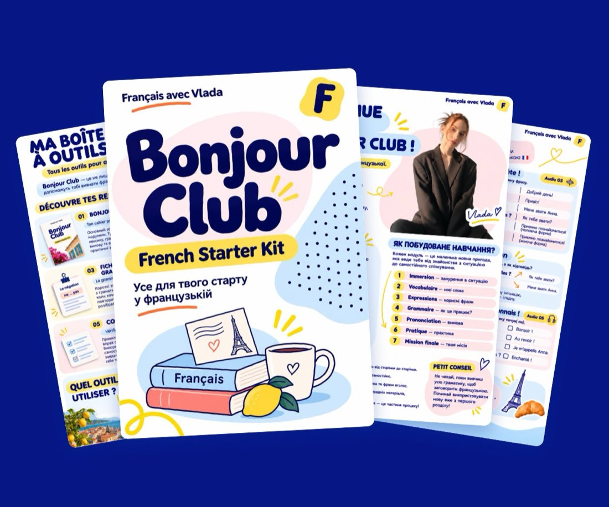
Весь зошит
Твій перший крок до французької
Усе для старту з нуля в одному наборі.
- 5 модулів: від «Bonjour» до кафе і супермаркету
- Аудіо, картки слів і шпаргалки з граматики
- Відповіді до вправ і планувальник прогресу
19 €
Доступ без терміну